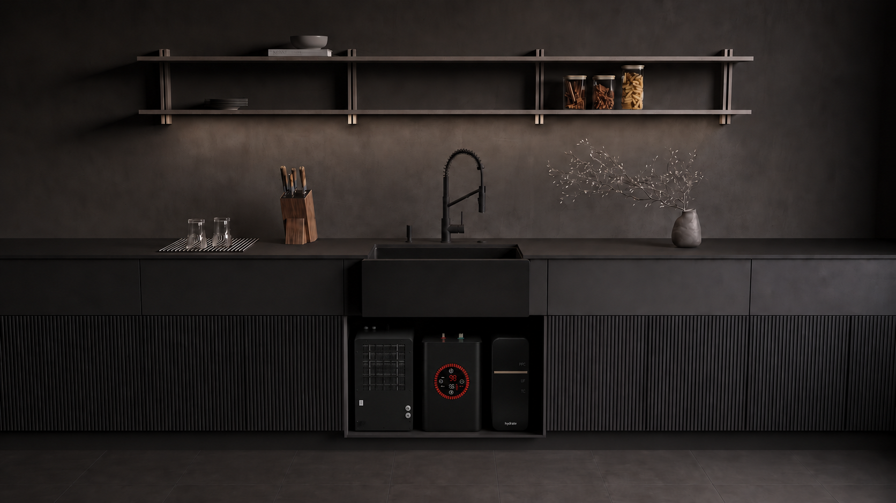
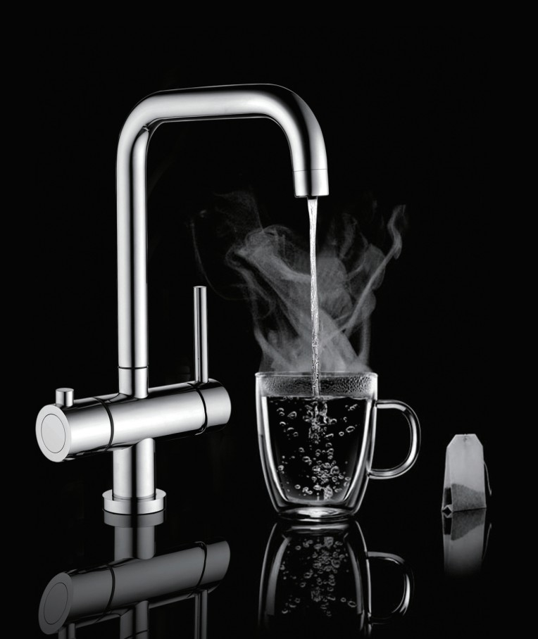
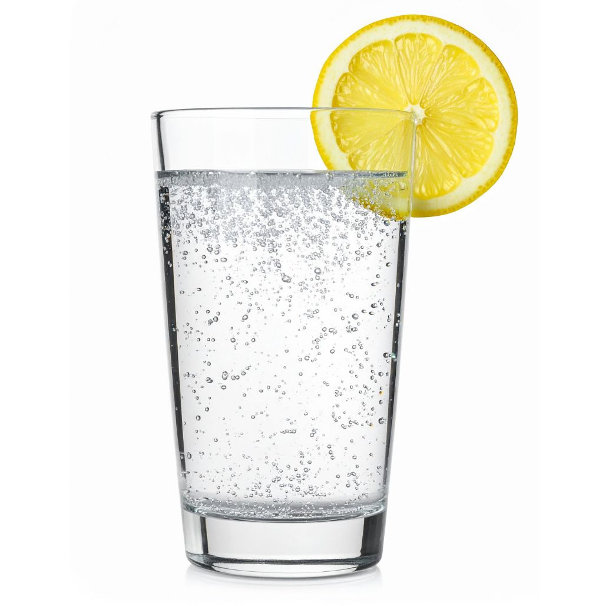
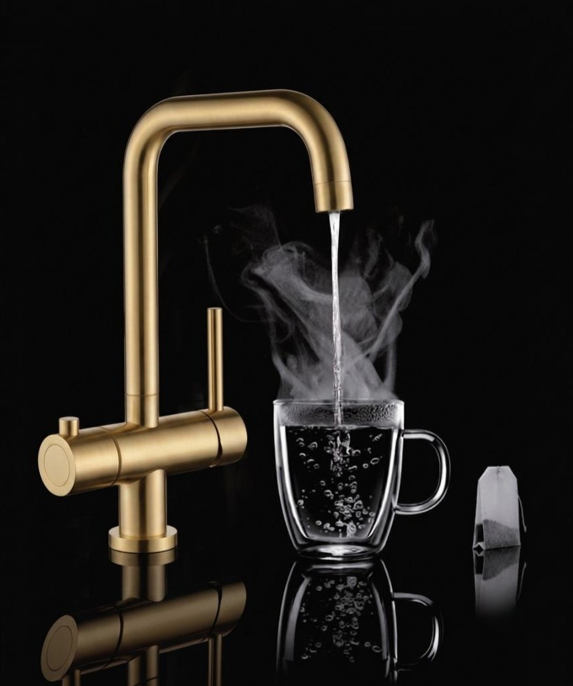
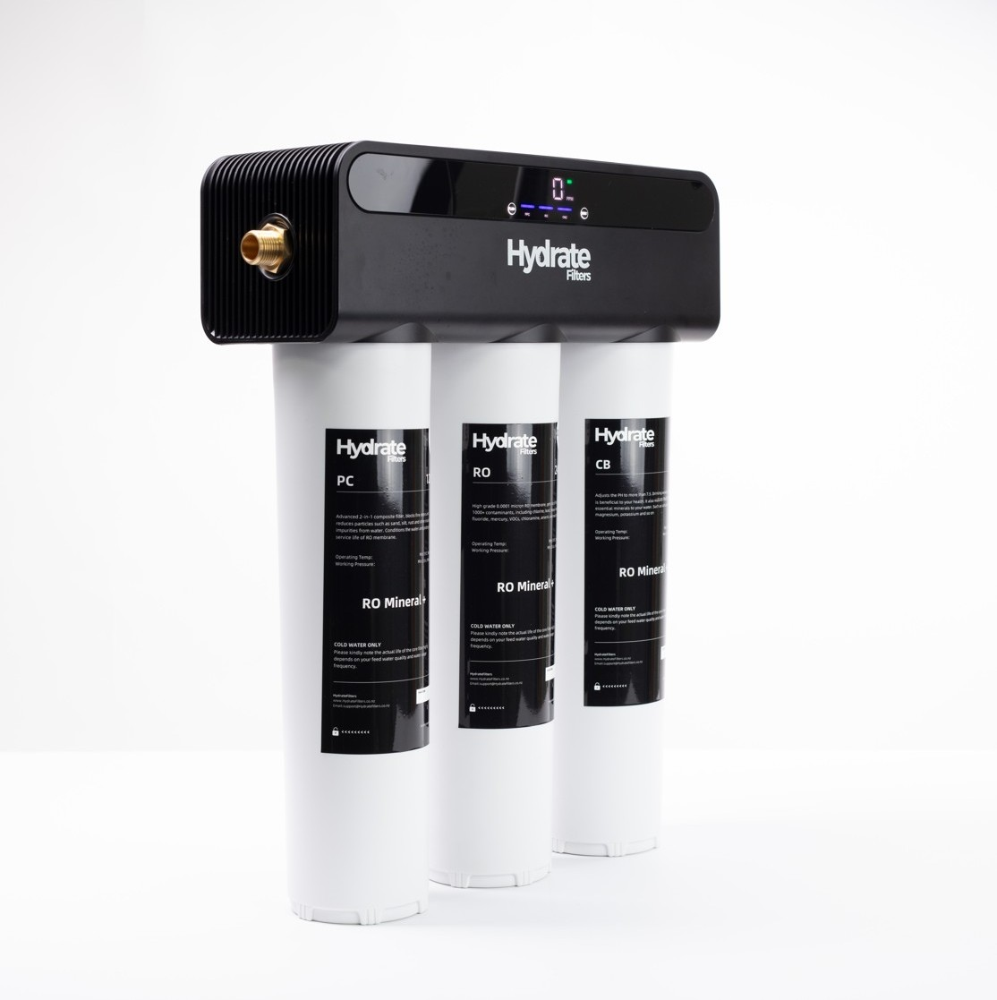

One elegant tap - to fit your lifestyle. Configure as desired. Chilled still, fine sparkling, ambient and true boiling water + the standard mains mixer - each on its own control.


One unit under the bench holds your filtered water cold and ready to pour. Carbonation is optional - add it and food-grade CO₂ dissolves into that chilled water under pressure, for a fine, persistent bead. Leave it off and the same unit simply pours chilled still.
A smart hot water system providing true boiling water on demand. No kettle on the bench, no waiting & next-level energy saving technology.


Exceptional water starts with exceptional filtration. We begin with highly purified water, then preserve or restore essential minerals, 100% naturally. Patented remineralisation technology uses selected natural rocks to reintroduce calcium, magnesium and beneficial trace elements for water as nature intended.
Choose your functions, pick a style, and get an instant price - shaped to fit your kitchen.
Build your tapMineral water shipped across the world.
HydrateServe makes it at the sink - no trucks, no boats, no single-use glass or plastic, just proven technology - certified by the best in the world.